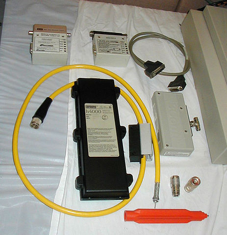
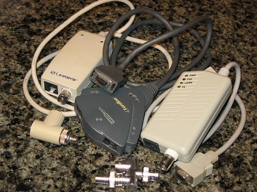
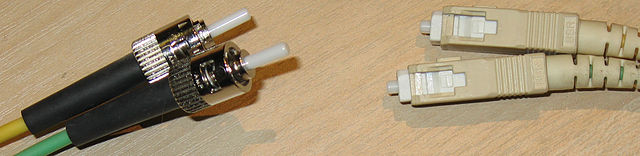

Ethernet - Layer 1/2
- Primary access used by wired clients
- Defined by IEEE
- Originally 802.3 group but others
Ethernet - Layer 1/2
- Ethernet PHY describes layer 1 piece
- Electrical standards over Coax or Twisted Pair
- Names are (speed)Base(Technology)
10Base5
- 10mbps over thick coax
- Used N connector or vampire tap
- Bus based - shared access
10Base5
10Base2
- 10mbps over thin coax
- Called thinnet
- Used BNC connectors
- Also bus based - used a terminator
10Base2
10BaseT
- T means Twisted Pair
- 10mbps over 8P8C cable (RJ45/Cat 3)
- 100m max length
- Star - requires hub or switch
 10BaseT
10BaseT
100BaseT
- 100mbps over Cat 5 cable
- Uses 2 pairs
- 100m max length
- 100BaseT4 for a 4 pair version over cat 3
1000BaseT
- 1gpbs over Cat 5 ot 5e cable
- Uses all 4 pairs
- Full Duplex only in practice
- Also 100m max length
10GBaseT
- 10gbps over Cat 6 (55m) or Cat 6a (100m)
- 2.5GBaseT and 5GBaseT varients exist
- Just gaining use
Fiber
- Multimode
- Larger - 50/125 or 62.5um/125
- Light bounces
- Slower - shorter distances
- Single Mode
- 8-10.5um/125
- Light goes straight
- Faster - longer distances
 Multimode Fiber
Multimode Fiber
10BaseFL
- 10mbps over Multimode Fiber
- Up to 2km
- Rarely used - usually 100mpbs+
100BaseFX
- 100mbps over Multimode fiber
- 400m for half duplex (Collision detection), 2km full duplex
- Commonly uses SC or ST
SC/ST
1000BaseSX
- 1gbps over multimode
- 550m max
- Uses SC, ST and LC
Layer 1 meets layer 2
- Layer 1 defines electrical signals
- Electrical signals have properties
- If two transmit at once the waves combine or cancel
- Need a method to detect
Broadcasts
- Ethernet is a broadcast medium
- Every station sees every frame
- This is not entirely true at this time with wired
- Is true with wireless
CSMA/CD
- Carrier Sense Multi Access with Collision Detect
- Each station listens if it has a packet to transmit
- Keeps listening while transmitting
- If colission jams and backs off for a random time
Collision Domain
- All stations which share an electrical medium
- On coax includes all stations on the same cable
- On UTP networks, all stations on a "hub"
- Switched networks limit collision domains
Full Duplex vs Half Duplex
- Full can transmit and receive at once
- No colissions on Full Duplex - colission domain of one
- Seperate transmit and receive pairs
- Normally switch vs hub - we'll discuss later
Ethernet at Layer 2
- Remember, layer 2 PDU called a frame
- Ethernet frame defined in 802.3
- Multiple types of ethernet frames over the years
Preamble and SFD
- Preamble 7 bytes of alternating 10101010
- Allows clock sync
- 55 Hex (Ethernet sends least sig bit first)
- SFD is 10101011
- Represents end of header - get ready to receive data
- D5 Hex
CRC and Interpacket Gap
- Last 4 bytes are CRC of entire frame other than FCS
- CRC is complemented to allow end of frame to be calculated without length
- 0xC704DD7B is the magic number in this case
- CRC is math heavy - we won't cover it's internals
- Interpacket Gap is 12 bytes worth of silence - we leave the line alone
- There is an end of packet marker with some encodings
Other Misc before frame types
- Technically the Preamble, SFD and Interpacket Gap are layer 1 components
- Frame Check Sequence (CRC) is error detection for layer 2
Ethernet Frame Types
- Raw IEEE 802.3 - used by Novel for IPX
- IEEE 802.2 LLC - used by protocols implmenting raw layer 3 over it
- Used by Netware and some OSI models
- IEEE 802.2 SNAP - Extension of above providing additional "addresses"
- EtherNet II - Most common in use
- Defined an ethertype header which describes contents
- Can optionaly have a length - 802.3 allows both
- Length comes before
- 1536 max length
MAC Addresses
- Stands for Media Access Control address
- 6 Octets
- First 3 are Organisationally Unique Identifier
- Next 3 bytes are unique to the NIC
- Unique, but can often be changed these days
MAC Addresses (Cont)
- OUI's assigned in blocks to manufacturers
- Last bits of first byte have meaning
- Bit 1 is Global or local (Should be flipped when edited)
- Bit 0 is Unicast vs Multicast
Mac Addresses (Cont)
- Last 3 bytes can be set as pleased
- Must me unique and usually burned in ROM
- As mentioned, many allow spoofinf MAC these days
EtherType
- Used to specify type of payload frame
- If under 1536 assumed to be size
- If size, next 2 bytes are type
- Common values
- 0x0800 - IPV4
- 0x0806 - ARP
- 0x86DD - IPv6
Next session
- Covering repeaters, hubs, switches, etc
- https://en.wikipedia.org/wiki/Ethernet and subpages
- Book chapters 15, 17, 19 (book is all over)